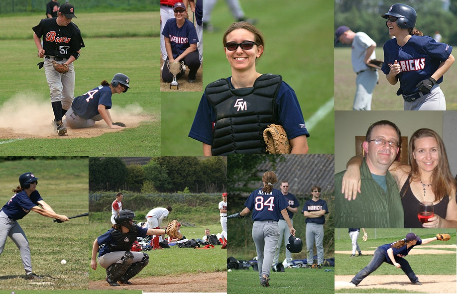
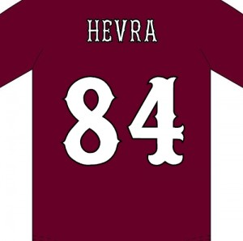
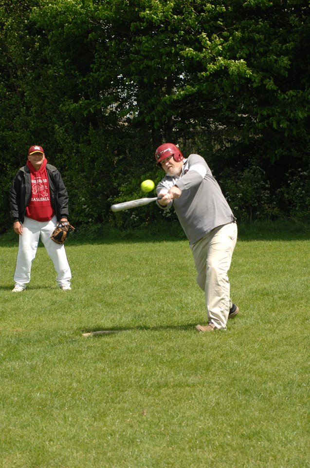

Jersey numbers retired in perpetuity. Once inducted, always a Maverick.


Heather joined mid-season 2003 having played junior baseball at Bournemouth, and immediately made her mark as one of the finest defensive catchers the club has ever had. Her throwing arm behind the plate was a genuine weapon — it discouraged opposing runners and saved runs season after season.
She was the inaugural inductee into the Hall of Fame in 2014, a fitting recognition of over a decade of committed service. That same year, Heather suffered a serious accident that resulted in the loss of her arm. She has demonstrated the same resilience and determination in recovery that she always showed on the diamond. The Heather Armstead Rookie Award — presented annually to the standout new player of the season — ensures her name remains part of the club forever.

Richard Williams co-founded the Guildford Mavericks in 1991 alongside a group of friends, establishing what became one of the longest-running active baseball clubs in the country. His contribution went far beyond playing — he handled marketing, facility development, and the administrative work that keeps a volunteer-run club alive.
After a break in the mid-1990s, Richard returned in 2009 with a vision: to build a junior programme that would create a self-sustaining pipeline of homegrown talent. The Broadwater Bobcats — later formalised as Guildford Youth Baseball — grew to over 60 junior members. The Gold Cats, who fielded an entirely junior-graduate roster in 2021, are a direct product of the programme he built.
Richard was also instrumental in securing the club's relocation to Broadwater School, laying the groundwork for the facilities the club enjoys today. Inducted in 2016, the same year the Guildford Millers were named — in direct tribute to the Wokingham Millers that he helped merge into existence in 1992.
The Hall of Fame is open to players, coaches, volunteers, and anyone who has made a lasting contribution to the Guildford Mavericks. If you have a nomination, get in touch.
Contact the Club →Explore the full season archive to see the moments that shaped the club.
← Season History